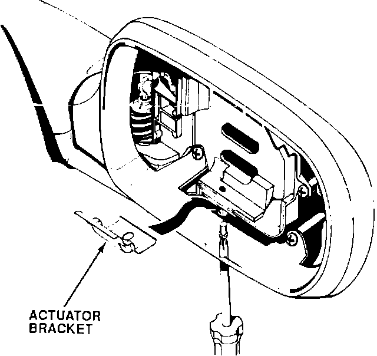

Door Mirror - Vibrates
YEAR1991
MODEL
LEGEND
4-DOOR
VIN APPLICATION
thru
VIN JH4KA7 . . . MC01727
June 8, 1992
BULLETIN NO
92-010
Door Mirror Vibrates
PROBLEM
The door mirror glass vibrates due to insufficient tension of the door mirror actuator bracket.
CORRECTIVE ACTION

Replace the actuator bracket and mounting screw (see PARTS INFORMATION).
1. Working through the service hole, use a # 2 Phillips screwdriver to loosen the actuator retaining screw. (See mirror glass replacement, page 20-23 of the Service Manual.)
2. Remove the mirror and actuator assembly by lifting up, then pulling out the lower edge of the mirror.
3. Remove the 3 X 10 mm actuator retaining screw and the actuator bracket.
4. Position the new actuator bracket over the service hole.
5. Put the new screw on the screwdriver, and align the retaining bracket. Start the screw, but don't tighten it yet.
Be careful not to cross-thread the screw.
6. Connect the two actuator connectors, and install the mirror assembly, top edge first, then bottom edge.
7. Tighten the retaining screw.
8. Turn the ignition switch ON, and check the mirror operation.
PARTS INFORMATION
Actuator Bracket P/N 76210-SP0-A01
4x8 mm screw P/N 93500-04010-99
WARRANTY INFORMATION
In warranty:
The normal warranty applies.
Out of warranty:
Any repair performed after warranty expiration may be eligible for goodwill consideration by the District Service Manager. You must request consideration, and get the DSM's decision, before starting work.
Operation number:
820150
Flat rate time:
0.2 hr.
Failed P/N:
76210-SP0-A01
Defect code:
045
Contention code:
B99